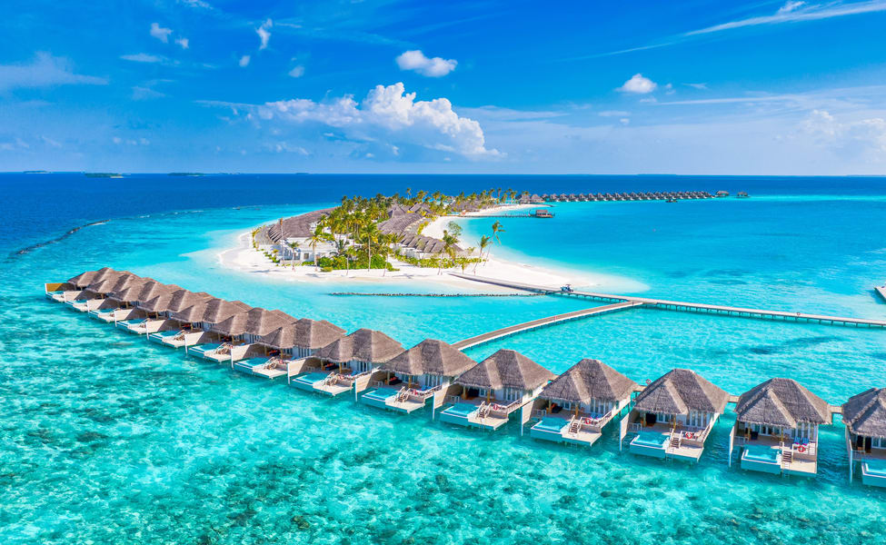

Maldives
Located in the Indian Ocean, the Maldives is a tropical paradise that is made up of 26 atolls and more than 1,000 coral islands. It has a unique culture that is a mix of South Asian, African, and Arab influences. The Maldives is also known for its cuisine, which features a variety of seafood dishes, as well as coconut and rice-based dishes. One of the biggest draws of the Maldives is its stunning beaches. The beaches are known for their white sands and crystal-clear waters, making them ideal for swimming, sunbathing, and snorkeling. Many of the resorts in the Maldives are located on private islands, which means that guests can enjoy exclusive access to these pristine beaches. Aside from its beaches, the Maldives is also home to a diverse array of flora and fauna. The country's coral reefs are particularly noteworthy, as they are home to a variety of marine species, including sharks, turtles, and colorful fish. Visitors to the Maldives can explore these coral reefs by snorkeling or scuba diving, or they can take a glass-bottomed boat tour to get a glimpse of the underwater world.
As I started to research more about the Maldives, I was captivated by the beauty and the unique experiences that this island nation has to offer. The Maldives is a perfect destination for those who are looking to relax and unwind in a tropical paradise, or for those who are seeking adventure and new experiences. One of the things that makes the Maldives so special is its culture. The people of the Maldives are warm and welcoming, and their unique culture is a blend of South Asian, African, and Arab influences. Visitors to the Maldives can immerse themselves in this culture by exploring the local markets, trying traditional Maldivian cuisine, or attending cultural events and festivals. But of course, one of the main attractions of the Maldives are its beaches. The beaches in the Maldives are simply breathtaking, with soft white sand and crystal-clear waters. It's no wonder that the Maldives is often considered to be one of the world's top beach destinations. Whether you're looking to sunbathe, swim, or simply take in the views, the beaches of the Maldives are the perfect place to do it.
Go back